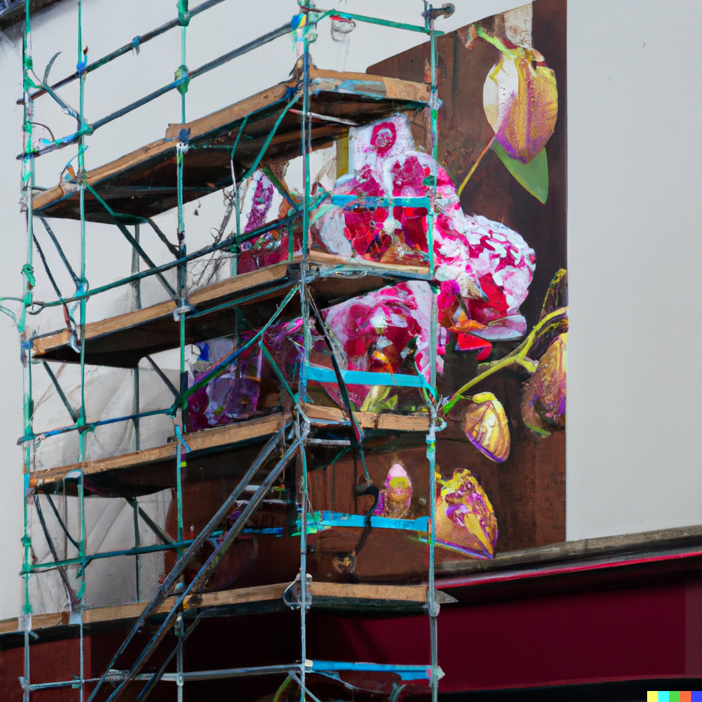

Advantages for Artists
Artists working with art generators are finding uses for them that are largely complementary to their existing practice. Idea generation is one of the areas where they are finding the technology most useful. AI’s fast turnaround allows them to quickly work through many more ideas than they could on their own, and the unpredictability of the generator also introduces new ideas into the mix. Artists report that AI has helped expand their creativity and increase their output.
Other artists describe an ongoing collaborative process with generators, working back and forth, tweaking prompts, then taking the results and editing them in photoshop, generating more variations, tweaking again, or tracing the final image from the generator and adding their own flair and style on top. The process has been described as co-creation. The unpredictability of AI may expand imagination, but it is also what makes human intervention necessary in order to have an image that truly meets your needs.
In my own time exploring the technology for research purposes I have also found uses for it in my own creative and professional work. For work, I had to use an artist’s existing work and make a mockup of it mounted on scaffolding. I was working with a limited set of images that could easily be cut up and used and it occurred to me that this would be a prime usage of an AI generator. The point of the mockup was to convey the general idea of how the scaffolding would look with artwork on it, the artwork itself was not what would ultimately be used. I could have generated variations of the artwork to use for the mockup to create a more varied and natural looking mockup, without the additional effort of having to make new artwork that I already knew would not ultimately be used for the final design.
"Floral painting artwork mounted on scaffolding in a city"
As regards my own artistic practice, I gave a generator prompts related to a comic strip that I draw. The results could not replace my comic, but the surreal results did give me ideas for new gags. I could foresee myself using a generator when I have writer’s block to help find more ideas for strips. My own experience bears out what many creative professionals have been saying, that an AI can be most helpful in the early stages of a creative project.